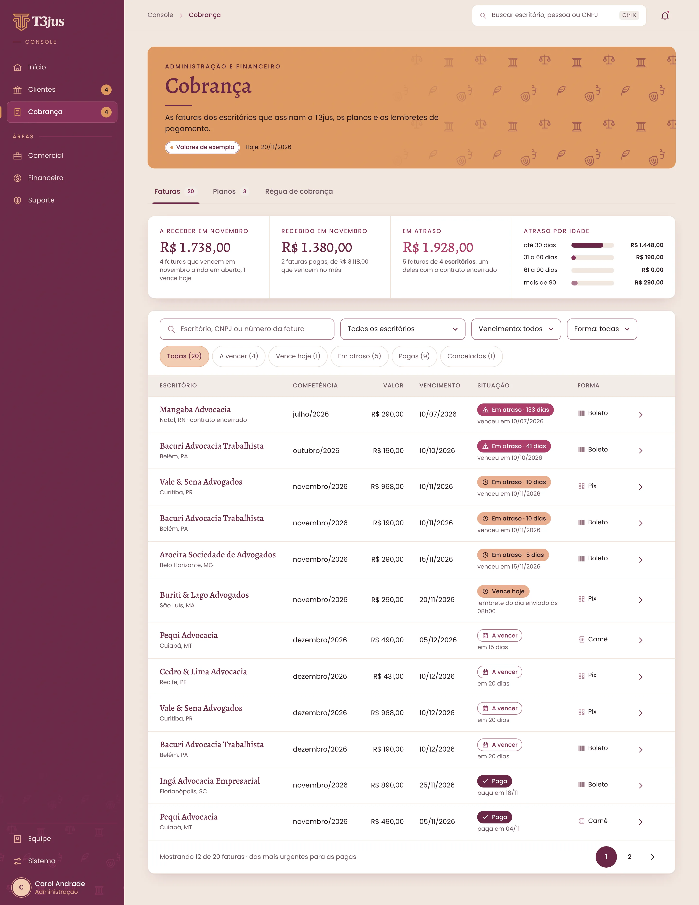

Faturas de todos os escritórios
Resumo em números (a receber em novembro, recebido, em atraso com quantos escritórios, atraso por idade em barras com o valor escrito) e a lista com busca, escritório, vencimento, forma (Pix, Boleto ou Carnê) e o filtro de situação. Cada linha: escritório, competência, valor, vencimento, situação com selo e texto, forma (a Pequi paga por carnê). No celular, cartões.
Abrir: cobranca.html?aba=faturas&estado=ver (estreite a janela para ver o celular)